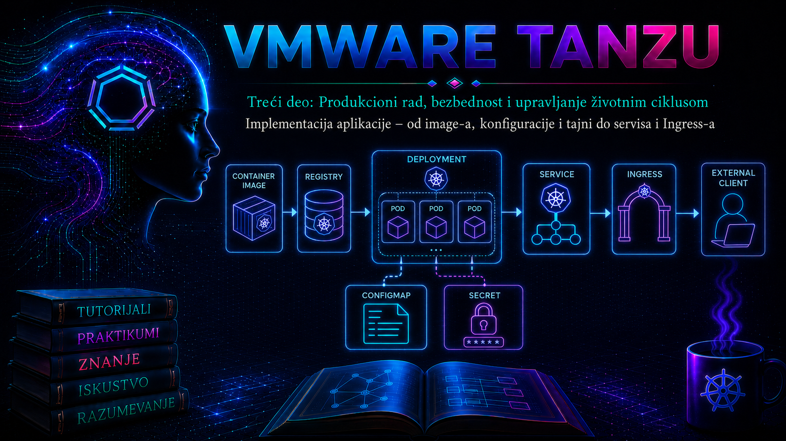

VMware & Tanzu

Od kontejnerskog image-a do aktivne aplikacije
Deploy aplikacije u Tanzu klaster nije jedna komanda kojom se image „pokreće”, već kontrolisana promena željenog stanja Kubernetes resursa. Administrator ili automatizovani sistem predaje Kubernetes API serveru deklaraciju koja opisuje image, broj replika, mrežni port, konfiguraciju, resurse, zdravstvene provere i bezbednosna ograničenja. Kontroleri zatim pokušavaju da stvarno stanje klastera usklade sa tom deklaracijom: Deployment kreira ReplicaSet, ReplicaSet zahteva odgovarajući broj Pod-ova, scheduler bira node-ove, a kubelet na izabranim node-ovima preuzima image iz registry-ja i pokreće kontejnere.
U Tanzu okruženju aplikacija se može izvršavati u workload klasteru kojim upravlja vSphere Kubernetes Service, u klasteru koji je formiran kroz Tanzu Kubernetes Grid ili u drugom podržanom Kubernetes modelu. Konkretan način dobijanja pristupa klasteru razlikuje se između izdanja, ali je aplikativni deploy nakon pravilnog postavljanja kubeconfig konteksta zasnovan na standardnom Kubernetes API-ju. Zato administrator mora da razlikuje dve ravni odgovornosti: Tanzu i vSphere obezbeđuju klaster, node-ove, mrežu, skladište i životni ciklus platforme, dok Kubernetes workload objekti određuju kako se aplikacija izvršava unutar klastera.
Najvažniji rezultat deploy procesa nije stanje Running samo po sebi. Pod može biti pokrenut, a da aplikacija nije spremna za saobraćaj, da ne može da pristupi zavisnom servisu, da koristi pogrešnu konfiguraciju ili da ne zadovoljava poslovnu funkciju. Uspešan deploy zato mora potvrditi najmanje četiri nivoa: Kubernetes objekti su prihvaćeni, kontejneri su pokrenuti, aplikacija je spremna prema readiness proveri i funkcionalni zahtev daje očekivani odgovor.
Preduslovi i zavisnosti deploy procesa
Pre promene administrator mora da potvrdi da se nalazi na pravom klasteru i u pravom namespace-u. Pogrešan kubeconfig kontekst može dovesti do implementacije testne verzije u produkciju, dok pogrešan namespace može zaobići očekivane kvote, politike i pristupne kontrole. Provera identiteta i odredišta mora prethoditi svakom kubectl apply postupku.
- Pristup Kubernetes API-ju: važeći kubeconfig, pouzdan API endpoint i korisnik ili automatizovani identitet sa najmanjim potrebnim RBAC pravima.
- Postojeći namespace: sa odgovarajućim ResourceQuota, LimitRange, Pod Security pravilima i mrežnim politikama, kada se koriste.
- Dostupan image: image mora postojati u registry-ju, odgovarati arhitekturi node-ova i biti označen nepromenljivim tagom ili, još pouzdanije, digest vrednošću.
- Registry poverenje: node-ovi moraju verovati TLS sertifikatu registry-ja, a Pod mora imati odgovarajuće credentials ako repozitorijum nije javan.
- Raspoloživi resursi: scheduler mora pronaći node sa dovoljnim CPU i memorijskim kapacitetom koji ispunjava taint, toleration, affinity i topology uslove.
- Aplikativne zavisnosti: DNS, baze, redovi poruka, konfiguracioni servisi i drugi endpoint-i moraju biti dostupni iz namespace-a aplikacije.
Za ručni administrativni deploy najčešće su potrebna prava za čitanje i kreiranje objekata kao što su Deployment, ReplicaSet, Pod, Service, ConfigMap, Secret, ServiceAccount i Event u jednom namespace-u. Pravo za čitanje Secret objekata ne treba automatski davati samo zato što korisnik može da kreira Deployment. U produkciji se odvajaju uloge osobe koja priprema manifest, automatizacije koja ga primenjuje i platformskog administratora koji upravlja klasterom i politikama.
Deklarativni manifest kao zapis željenog stanja
Produkcioni deploy treba da bude zasnovan na verzionisanom manifestu, Helm paketu, Kustomize konfiguraciji ili GitOps resursu, a ne na nizu neponovljivih interaktivnih komandi. Deklarativni zapis omogućava pregled promene, audit, poređenje okruženja i ponovnu implementaciju. Komanda kubectl apply šalje željeno stanje API serveru, ali sama po sebi ne dokazuje da je rollout uspeo; zbog toga se uvek kombinuje sa proverom generisanih objekata, događaja i aplikativne funkcije.
Deployment manifest mora precizno povezati selektor i oznake Pod šablona. Vrednosti u spec.selector.matchLabels moraju odgovarati oznakama u spec.template.metadata.labels. Selektor Deployment-a je praktično nepromenljiv nakon kreiranja; pogrešan selektor se najčešće rešava kreiranjem novog Deployment objekta ili pažljivo planiranim uklanjanjem i ponovnim kreiranjem, a ne improvizovanom izmenom u produkciji.
Image se navodi zajedno sa registry hostom, projektom, repozitorijumom i verzijom. Tag latest nije pogodan za kontrolisani deploy jer ne govori koji je sadržaj stvarno pokrenut. Čak i semantički tag može biti prepisan ako registry to dozvoljava. Digest, na primer registry.infra.example.com/apps/orders-api@sha256:..., kriptografski identifikuje sadržaj image-a i omogućava pouzdan audit. Kada organizacija još koristi verzijske tagove, registry treba da zabrani njihovo prepisivanje, a deploy evidencija treba da zabeleži i resolved digest.
Šta se događa unutar klastera
Nakon prihvatanja manifestа Deployment kontroler formira ili ažurira ReplicaSet. Scheduler obrađuje nove Pod-ove koji nemaju dodeljen node, procenjuje zahteve za resurse i pravila raspoređivanja, a zatim upisuje izabrani node. Kubelet na tom node-u priprema mrežni sandbox, prosleđuje registry credentials kontejnerskom runtime-u, preuzima slojeve image-a koji nedostaju i pokreće definisane kontejnere.
Ako image ne postoji, registry odbije pristup ili TLS lanac nije pouzdan, Pod obično ostaje u stanju Pending, ErrImagePull ili ImagePullBackOff. Ako se proces u kontejneru pokrene pa završi greškom, stanje prelazi u CrashLoopBackOff uz rast broja restartovanja. Ako je aplikacija pokrenuta, ali readiness proba ne prolazi, Pod može imati fazu Running, ali neće biti Ready i Service ga neće koristiti kao spreman endpoint. Ove razlike su osnova pravilne dijagnostike.
| Simptom | Najverovatniji sloj problema | Prva provera |
|---|---|---|
| Pod je dugo Pending | Scheduler, kvote, resursi, taint ili affinity | kubectl describe pod i Events |
| ImagePullBackOff | Registry, naziv image-a, credentials ili TLS | Pod Events i postojanje imagePullSecret-a |
| CrashLoopBackOff | Proces aplikacije, konfiguracija ili zavisnost | kubectl logs i kubectl logs --previous |
| Running, ali 0/1 Ready | Readiness proba ili aplikativna zavisnost | Opis Pod-a i rezultat readiness endpoint-a |
| Service nema endpoint-e | Pod nije Ready ili selector ne odgovara labelama | kubectl get endpointslice i labele Pod-a |
| Rollout ne završava | Nove replike nisu dostupne | kubectl rollout status, ReplicaSet i Events |
Resursi, probe i kontrolisani rollout
CPU i memorijski zahtevi nisu samo optimizacija. Scheduler koristi requests da odluči gde Pod može biti postavljen, dok limits ograničavaju potrošnju. Prenizak memorijski limit može izazvati OOMKilled, a nepostojanje zahteva može dovesti do nepredvidivog raspoređivanja i lošeg ponašanja pri opterećenju. Vrednosti se ne biraju nasumično: početna procena se zasniva na testiranju, a kasnije se koriguje prema metrikama iz realnog rada.
Startup, readiness i liveness probe imaju različite uloge. Startup proba štiti sporo pokretanje aplikacije od prerane liveness intervencije. Readiness određuje kada Pod sme da prima saobraćaj, dok liveness proverava da li proces treba ponovo pokrenuti jer se više ne može oporaviti. Liveness ne treba da proverava svaku spoljašnju zavisnost: nedostupna baza ne treba automatski da izazove restart svih Pod-ova i dodatno pogorša incident. Readiness može privremeno ukloniti instancu iz saobraćaja, dok liveness treba da bude usmerena na unutrašnju sposobnost procesa da nastavi rad.
Strategija RollingUpdate postepeno zamenjuje stare Pod-ove novim. Parametar maxUnavailable određuje koliko replika sme privremeno biti nedostupno, a maxSurge koliko dodatnih Pod-ova može biti formirano iznad željenog broja. Vrednosti utiču i na raspoloživost i na privremenu potrošnju kapaciteta. Klaster koji ima resurse za tri replike možda nema kapacitet za četvrtu surge repliku, pa rollout može zastati iako je postojeća aplikacija zdrava.
progressDeadlineSeconds omogućava da Deployment označi nedostatak napretka, ali ne vraća automatski prethodnu verziju. Produkcioni proces mora eksplicitno definisati ko donosi odluku o rollback-u i na osnovu kojih tehničkih i poslovnih kriterijuma. Detaljan rollback je predmet naredne lekcije; ovde je važno da deploy čuva reviziju i da administrator ne briše staru ReplicaSet istoriju pre završetka validacije.
Konfiguracija, tajne i identitet aplikacije
Konfiguracija koja se razlikuje između okruženja ne treba da bude ugrađena u image. ConfigMap može sadržati nepoverljive vrednosti, dok Secret služi za poverljive podatke, ali osnovni Kubernetes Secret nije sam po sebi eksterni trezor niti garancija šifrovanja u svim slojevima. Pristup Secret objektima mora biti ograničen RBAC pravilima, šifrovanje podataka u etcd-u mora biti deo platformskog dizajna, a ozbiljna produkciona okruženja često koriste integraciju sa namenskim sistemom za upravljanje tajnama.
Registry credentials imaju posebnu namenu. Secret tipa kubernetes.io/dockerconfigjson prosleđuje kubeletu podatke potrebne za preuzimanje privatnog image-a. On mora postojati u istom namespace-u kao Pod koji ga koristi. Praktičnije je povezati ga sa namenskim ServiceAccount objektom nego ponavljati imagePullSecrets u svakom Deployment-u, ali takav ServiceAccount treba koristiti samo za aplikacije kojima je pristup konkretnom registry projektu stvarno potreban.
Aplikativni ServiceAccount ne treba automatski da dobije pristup Kubernetes API-ju. Kada aplikacija ne komunicira sa API serverom, automountServiceAccountToken: false smanjuje nepotrebno izlaganje tokena. Ako je API pristup potreban, dodeljuje se poseban Role i RoleBinding sa preciznim operacijama i resursima, bez administratorskih privilegija.
Bezbednosni i operativni kriterijumi
Produkcioni manifest treba da spreči privilegovano izvršavanje kad god aplikacija to ne zahteva. Tipične mere uključuju rad kao ne-root korisnik, zabranu eskalacije privilegija, uklanjanje Linux capabilities, read-only root filesystem i seccomp profil RuntimeDefault. Ove kontrole mogu otkriti loše pripremljen image koji pokušava da piše u sistemske direktorijume ili zahteva root bez opravdanog razloga. Rešenje nije automatsko popuštanje politike, već promena image-a ili dokumentovana procena stvarne potrebe.
Deploy nije odgovarajuća tačka za improvizovano rešavanje infrastrukturnih problema. Ako nema slobodnog kapaciteta, administrator aplikacije ne treba bez odobrenja da smanjuje resursne zahteve ispod bezbednih vrednosti. Ako registry sertifikat nije pouzdan, ne treba uključiti nesiguran HTTP ili preskočiti TLS proveru. Ako Pod Security pravilo odbije manifest, zahtev treba uskladiti sa politikom ili eskalirati vlasniku platforme, a ne tražiti široko izuzeće bez procene rizika.
Pre promene se dokumentuju image verzija i digest, ciljni klaster i namespace, broj replika, vlasnik promene, očekivani period implementacije, zavisnosti, kriterijumi uspeha i plan povratka. Nakon promene se čuvaju rezultat rollout-a, broj spremnih replika, funkcionalni test, relevantni događaji i eventualna odstupanja. Time deploy postaje proverljiva administrativna promena, a ne samo trenutna aktivnost u terminalu.
Service, EndpointSlice i Ingress: put korisničkog zahteva
Deployment upravlja Pod-ovima, ali njihove IP adrese nisu stabilan aplikativni interfejs. Service tipa ClusterIP obezbeđuje stabilno ime i virtuelnu adresu, a njegov selector bira Pod-ove. Kontrolna ravan zatim održava EndpointSlice objekte sa adresama backend-a. Pod koji ne prolazi readiness proveru ostaje izvan skupa spremnih endpoint-a; zato lanac Ingress → Service → EndpointSlice → Ready Pod treba proveravati redom, bez preskakanja slojeva.
Ingress je standardni Kubernetes API objekat za HTTP/HTTPS pravila, ali sam objekat ne prosleđuje saobraćaj. U klasteru mora postojati operativan Ingress controller i odgovarajući IngressClass. U Tanzu okruženjima to može biti Contour sa Envoy-em, drugi podržani kontroler ili platformski servis koji je organizacija standardizovala. Dostupnost kontrolera, način dodele spoljne IP adrese i integracija sa NSX-om ili drugim load balancer-om zavise od verzije i topologije platforme; aplikativni tim zato ne sme pretpostaviti naziv klase niti instalirati paralelni kontroler bez odluke platformskog tima.
| Sloj | Odgovornost | Dokaz ispravnosti |
|---|---|---|
| DNS | Ime hosta pokazuje na spoljašnju adresu Ingress ulaza | dig +short orders.apps.example.com |
| Load balancer / Envoy | Prima TCP 80/443 i prosleđuje kontroleru | Status servisa kontrolera i test konekcije |
| IngressClass i Ingress | Kontroler prihvata host/path pravilo | kubectl describe ingress, status i događaji |
| Service | Mapira port 80 na imenovani port kontejnera | Service selector i portovi |
| EndpointSlice | Objavljuje spremne backend adrese | Najmanje jedna adresa sa ready=true |
| Aplikacija | Vraća očekivani sadržaj i poslovni rezultat | HTTP test sa hostom, TLS-om i očekivanim telom |
Za novo projektovanje treba razmotriti i Kubernetes Gateway API, koji razdvaja infrastrukturnu i aplikativnu odgovornost bogatije od Ingress API-ja. Ipak, Ingress ostaje stabilan i široko podržan API; izbor se zasniva na mogućnostima instaliranog kontrolera, platformskom standardu i podržanoj verziji, a ne samo na postojanju CRD objekata.
TLS, DNS i tajne aplikacije
HTTPS Ingress referencira TLS Secret tipa kubernetes.io/tls u istom namespace-u. Sertifikat mora pokrivati host iz Ingress pravila, sadržati ispravan lanac i biti rotiran pre isteka. Privatni ključ se ne čuva u Git repozitorijumu niti se prikazuje kroz dijagnostički izlaz. Poželjno je da životnim ciklusom sertifikata upravlja odobreni certificate controller ili platformski PKI tok; ručno kreiranje u praktikumu služi samo da pokaže API vezu.
Aplikativne tajne i registry credentials imaju različite potrošače. imagePullSecret koristi kubelet za preuzimanje image-a, dok aplikativni Secret čita kontejner kao promenljivu ili datoteku. Promena ConfigMap ili Secret objekta ne mora automatski restartovati postojeće Pod-ove: vrednosti injektovane kroz environment promenljive čitaju se pri pokretanju, dok se projektovani volume sadržaj ažurira eventualno, uz kašnjenje, ali aplikacija i dalje mora umeti da ga ponovo učita. Kontrolisani rollout ili alat koji u Pod template unosi checksum konfiguracije daju predvidljiviju aktivaciju promene.
Integrisani praktikum: produkcioni deploy servisa orders-api
Poslovni i tehnički kontekst. Razvojni tim je objavio verziju 1.4.2 internog HTTP servisa orders-api u privatnom registry-ju registry.infra.example.com. Aplikacija treba da bude implementirana u namespace prod-orders workload klastera tkg-prod-01, prvo proverena interno, a zatim objavljena kao https://orders.apps.example.com kroz već odobren Ingress controller.
Cilj. Kreirati namenski ServiceAccount i registry Secret, primeniti ConfigMap, aplikativni Secret, Deployment i ClusterIP Service, proveriti rollout, dodati TLS Ingress, izvesti interne i spoljne funkcionalne i negativne testove, pregledati logove i ostaviti proverljivu evidenciju promene.
Referentno okruženje. Administratorska stanica ima kompatibilan kubectl, kubeconfig pristup klasteru tkg-prod-01 i direktorijum /opt/tanzu-lab/orders-api. Registry sadrži image registry.infra.example.com/apps/orders-api:1.4.2. Aplikacija sluša na TCP portu 8080 i izlaže endpoint-e /startup, /ready, /health i /api/v1/status.
Potrebna prava. Operator mora imati pravo get, list, watch, create, patch, update i, za cleanup, delete nad korišćenim namespaced objektima. Nisu potrebna cluster-admin prava niti pristup drugim namespace-ovima.
Preduslovi. Namespace prod-orders već postoji i platformski tim je primenio njegove kvote i bezbednosna pravila. Korisničko ime registry-ja dostupno je kroz odobreni nalog orders-deployer, a lozinka se preuzima iz organizacionog sistema za tajne i neće biti upisana u manifest ili istoriju komandi.
-
Potvrditi klaster, identitet i namespace. Pre bilo kakve promene proverava se aktivni kontekst, server kome se pristupa, identitet i stvarna ovlašćenja. Ne nastavljati ako naziv ili API endpoint ne odgovaraju odobrenoj promeni.
Validacija: aktivni kontekst mora pripadati klasterukubectl config current-context kubectl cluster-info kubectl auth whoami kubectl get namespace prod-orders kubectl auth can-i create deployments.apps -n prod-orders kubectl auth can-i create services -n prod-orders kubectl auth can-i create secrets -n prod-orderstkg-prod-01, namespace mora imati statusActive, a tri RBAC upita moraju vratitiyes. Akokubectl auth whoaminije podržan verzijom klijenta ili servera, identitet se proverava iz odobrenog kubeconfig izvora i audit evidencije platforme. -
Snimiti početno stanje i proveriti kapacitet namespace-a. Ovim se utvrđuje da li već postoje objekti istog imena i da li kvote mogu prihvatiti tri nove replike.
Validacija: ne sme postojati nepoznat Deployment sa imenommkdir -p /opt/tanzu-lab/orders-api cd /opt/tanzu-lab/orders-api kubectl get deployment,replicaset,pod,service,configmap,serviceaccount \ -n prod-orders \ -l app.kubernetes.io/name=orders-api -o wide kubectl get resourcequota,limitrange -n prod-orders kubectl describe resourcequota -n prod-ordersorders-api. Kvote moraju omogućiti najmanje 750 milicore zahtevanog CPU-a i 768 MiB zahtevane memorije za tri replike, uz prostor za privremenu surge repliku ako je kvota obračunava. Ako objekat već postoji, promena se tretira kao ažuriranje i pre primene se izvozi postojeće stanje.kubectl get deployment orders-api -n prod-orders -o yaml \ > orders-api-before-change.yaml 2>/dev/null || true -
Kreirati registry Secret bez upisivanja lozinke u manifest. Lozinka se unosi skriveno u promenljivu trenutne shell sesije. Komanda koristi klijentsko generisanje YAML-a i prosleđuje ga API serveru. U strogo kontrolisanoj produkciji ovaj korak izvršava secret operator ili CI/CD integracija sa trezorom.
Validacija: proverava se samo tip i metadata, bez prikazivanja dekodiranog sadržaja. Secret mora biti tipaexport REGISTRY_SERVER='registry.infra.example.com' export REGISTRY_USERNAME='orders-deployer' read -r -s -p 'Registry password: ' REGISTRY_PASSWORD echo kubectl create secret docker-registry orders-registry-pull \ --namespace prod-orders \ --docker-server="${REGISTRY_SERVER}" \ --docker-username="${REGISTRY_USERNAME}" \ --docker-password="${REGISTRY_PASSWORD}" \ --dry-run=client -o yaml | kubectl apply -f - unset REGISTRY_PASSWORDkubernetes.io/dockerconfigjson.kubectl get secret orders-registry-pull -n prod-orders \ -o custom-columns='NAME:.metadata.name,TYPE:.type,CREATED:.metadata.creationTimestamp' -
Kreirati aplikativni Secret bez čuvanja vrednosti u fajlu. Primer simulira API ključ za obaveznu zavisnost. U produkciji vrednost isporučuje odobreni trezor ili secrets operator; ručni unos je laboratorijski postupak.
Validacija: objekat mora postojati, ali se vrednost ne dekodira niti kopira u tiket. Proveravaju se samo naziv, tip i vreme kreiranja.read -r -s -p 'Orders backend API key: ' ORDERS_BACKEND_API_KEY echo kubectl create secret generic orders-api-runtime \ --namespace prod-orders \ --from-literal=BACKEND_API_KEY="${ORDERS_BACKEND_API_KEY}" \ --dry-run=client -o yaml | kubectl apply -f - unset ORDERS_BACKEND_API_KEY kubectl get secret orders-api-runtime -n prod-orders \ -o custom-columns='NAME:.metadata.name,TYPE:.type,CREATED:.metadata.creationTimestamp' -
Pripremiti jedinstveni manifest aplikacije. Manifest kreira ConfigMap, ServiceAccount, Service i Deployment. Primer koristi verzijski tag radi čitljivosti; u produkcionom change zapisu tag treba povezati sa digestom potvrđenim u registry-ju.
Validacija: klijentska provera otkriva osnovne probleme sa strukturom i tipovima polja, dok serverski dry-run proverava manifest prema API šemi, admission pravilima i ovlašćenjima bez trajnog kreiranja objekata.cat > orders-api.yaml <<'EOF' apiVersion: v1 kind: ConfigMap metadata: name: orders-api-config namespace: prod-orders labels: app.kubernetes.io/name: orders-api app.kubernetes.io/part-of: orders-platform data: APP_ENV: "production" LOG_LEVEL: "info" --- apiVersion: v1 kind: ServiceAccount metadata: name: orders-api namespace: prod-orders labels: app.kubernetes.io/name: orders-api imagePullSecrets: - name: orders-registry-pull automountServiceAccountToken: false --- apiVersion: v1 kind: Service metadata: name: orders-api namespace: prod-orders labels: app.kubernetes.io/name: orders-api spec: type: ClusterIP selector: app.kubernetes.io/name: orders-api ports: - name: http port: 80 targetPort: http protocol: TCP --- apiVersion: apps/v1 kind: Deployment metadata: name: orders-api namespace: prod-orders labels: app.kubernetes.io/name: orders-api app.kubernetes.io/part-of: orders-platform app.kubernetes.io/version: "1.4.2" spec: replicas: 3 revisionHistoryLimit: 5 progressDeadlineSeconds: 300 strategy: type: RollingUpdate rollingUpdate: maxUnavailable: 0 maxSurge: 1 selector: matchLabels: app.kubernetes.io/name: orders-api template: metadata: labels: app.kubernetes.io/name: orders-api app.kubernetes.io/part-of: orders-platform app.kubernetes.io/version: "1.4.2" spec: serviceAccountName: orders-api terminationGracePeriodSeconds: 30 securityContext: runAsNonRoot: true seccompProfile: type: RuntimeDefault containers: - name: orders-api image: registry.infra.example.com/apps/orders-api:1.4.2 imagePullPolicy: IfNotPresent ports: - name: http containerPort: 8080 protocol: TCP envFrom: - configMapRef: name: orders-api-config env: - name: BACKEND_API_KEY valueFrom: secretKeyRef: name: orders-api-runtime key: BACKEND_API_KEY resources: requests: cpu: 250m memory: 256Mi limits: cpu: 750m memory: 512Mi startupProbe: httpGet: path: /startup port: http periodSeconds: 5 failureThreshold: 24 timeoutSeconds: 2 readinessProbe: httpGet: path: /ready port: http periodSeconds: 5 failureThreshold: 3 timeoutSeconds: 2 livenessProbe: httpGet: path: /health port: http periodSeconds: 10 failureThreshold: 3 timeoutSeconds: 2 securityContext: allowPrivilegeEscalation: false readOnlyRootFilesystem: true capabilities: drop: - ALL runAsUser: 10001 runAsGroup: 10001 volumeMounts: - name: tmp mountPath: /tmp volumes: - name: tmp emptyDir: sizeLimit: 128Mi EOF
Obe komande moraju završiti bez greške. Odbijanje zbog Pod Security politike, kvote ili admission kontrole ne sme se zaobići; manifest se ispravlja ili se zahtev eskalira vlasniku politike.kubectl apply --dry-run=client -f orders-api.yaml kubectl apply --server-side --dry-run=server -f orders-api.yaml -
Primeniti manifest i pratiti rollout. Server-side apply olakšava evidenciju vlasništva nad poljima. Field manager jasno označava da promenu izvodi administrativni postupak ovog praktikuma.
Validacija: očekivani rezultat je poruka da je Deployment uspešno rollout-ovan. Ako komanda istekne, ne ponavljatikubectl apply --server-side \ --field-manager=tashizza-admin \ -f orders-api.yaml kubectl rollout status deployment/orders-api \ -n prod-orders \ --timeout=5mapplynaslepo, već odmah pregledati Deployment, ReplicaSet, Pod-ove i događaje.
Deployment mora prikazatikubectl get deployment orders-api -n prod-orders kubectl get replicaset -n prod-orders \ -l app.kubernetes.io/name=orders-api kubectl get pods -n prod-orders \ -l app.kubernetes.io/name=orders-api -o wide kubectl get events -n prod-orders \ --sort-by=.metadata.creationTimestamp | tail -n 303/3spremne replike, a sva tri Pod-a moraju imatiREADY 1/1i stabilan broj restartovanja. -
Potvrditi konfiguraciju, image i bezbednosna svojstva. Provera ne otkriva sadržaj tajne, već potvrđuje da Pod koristi očekivani ServiceAccount, image i konfiguracione vrednosti.
Validacija: ServiceAccount mora bitikubectl get deployment orders-api -n prod-orders \ -o jsonpath='{.spec.template.spec.serviceAccountName}{"\n"}{.spec.template.spec.containers[0].image}{"\n"}' kubectl get pods -n prod-orders \ -l app.kubernetes.io/name=orders-api \ -o custom-columns='NAME:.metadata.name,IMAGE:.spec.containers[0].image,READY:.status.containerStatuses[0].ready,RESTARTS:.status.containerStatuses[0].restartCount,NODE:.spec.nodeName' POD_NAME="$(kubectl get pods -n prod-orders \ -l app.kubernetes.io/name=orders-api \ -o jsonpath='{.items[0].metadata.name}')" kubectl exec -n prod-orders "${POD_NAME}" -- \ sh -c 'printf "APP_ENV=%s\nLOG_LEVEL=%s\n" "$APP_ENV" "$LOG_LEVEL"'orders-api, image mora imati verziju1.4.2, svi Pod-ovi moraju biti spremni, a aplikacija mora videtiAPP_ENV=productioniLOG_LEVEL=info. Ako image nema shell, poslednja komanda može opravdano biti nedostupna; konfiguracija se tada proverava kroz aplikativni dijagnostički endpoint ili observability sistem, bez dodavanja shell alata u produkcioni image samo radi administracije. -
Proveriti Service i endpoint-e. Service selector mora izabrati spremne Pod-ove. Savremena dijagnostika koristi EndpointSlice objekte, dok se klasični Endpoints prikaz može koristiti kao dopunska provera.
Validacija: Service mora imati ClusterIP i portkubectl get service orders-api -n prod-orders -o wide kubectl get endpointslice -n prod-orders \ -l kubernetes.io/service-name=orders-api -o wide kubectl get pods -n prod-orders \ -l app.kubernetes.io/name=orders-api --show-labels80/TCP. EndpointSlice treba da sadrži tri spremne adrese. Nula endpoint-a uz tri Running Pod-a najčešće znači da Pod-ovi nisu Ready ili da selector ne odgovara njihovim labelama. -
Izvesti završni funkcionalni test. Port-forward je privremeni administrativni tunel do Service objekta i nije produkcioni način izlaganja aplikacije. Pokreće se u posebnoj terminal sesiji i prekida nakon testa.
U drugoj terminal sesiji izvršava se zahtev:kubectl port-forward -n prod-orders service/orders-api 18080:80
Validacija: očekuje se HTTP uspeh i aplikativni odgovor koji potvrđuje serviscurl --fail --silent --show-error \ http://127.0.0.1:18080/api/v1/statusorders-api, okruženjeproductioni verziju1.4.2. Nakon provere port-forward se prekida kombinacijomCtrl+C. Status 200 bez očekivanog sadržaja nije dovoljan kriterijum ako je endpoint mogao vratiti generičku stranicu ili odgovor pogrešne verzije. -
Izvesti negativni test bez promene produkcionog Deployment-a. Proverava se da Service ne izlaže nepostojeću putanju i da aplikacija ne vraća lažno pozitivan odgovor.
U drugoj sesiji:kubectl port-forward -n prod-orders service/orders-api 18080:80
Validacija: očekuje securl --silent --output /dev/null --write-out '%{http_code}\n' \ http://127.0.0.1:18080/api/v1/does-not-exist404ili drugi unapred dokumentovan klijentski status, a ne200i ne prekid veze. Ako nepostojeća putanja vraća 200, rezultat se prijavljuje timu aplikacije jer može prikriti greške u monitoringu i integracionim testovima. -
Potvrditi platformski Ingress preduslov. Sledeće komande su read-only. Naziv klase
contourje referentni primer i mora se zameniti stvarnom klasom koju je platformski tim odobrio.
Validacija: najmanje jedna odgovarajuća IngressClass mora imati operativan controller; spoljašnja adresa njegovog proxy servisa ne sme biti trajnokubectl get ingressclass kubectl get service -A \ -l app.kubernetes.io/name=envoy -o wide kubectl auth can-i create ingresses.networking.k8s.io -n prod-orders<pending>; RBAC provera mora vratitiyes. Ako kontroler ili load balancer nisu spremni, aplikativni Ingress se ne kreira kao zamena za platformski popravak. -
Kreirati TLS Secret i Ingress. Sertifikat i ključ se prethodno izdaju za
orders.apps.example.comi privremeno nalaze u zaštićenom radnom direktorijumu sa ograničenim dozvolama. Ne koristiti samopotpisani sertifikat u produkciji. State-changing komande sucreate secretiapply.
Validacija: serverski dry-run mora potvrditi API šemu i admission pravila.test -r ./tls/orders.apps.example.com.crt test -r ./tls/orders.apps.example.com.key kubectl create secret tls orders-api-tls \ --namespace prod-orders \ --cert=./tls/orders.apps.example.com.crt \ --key=./tls/orders.apps.example.com.key \ --dry-run=client -o yaml | kubectl apply -f - cat > orders-api-ingress.yaml <<'EOF' apiVersion: networking.k8s.io/v1 kind: Ingress metadata: name: orders-api namespace: prod-orders labels: app.kubernetes.io/name: orders-api spec: ingressClassName: contour tls: - hosts: - orders.apps.example.com secretName: orders-api-tls rules: - host: orders.apps.example.com http: paths: - path: / pathType: Prefix backend: service: name: orders-api port: number: 80 EOF kubectl apply --server-side --dry-run=server -f orders-api-ingress.yaml kubectl diff -f orders-api-ingress.yaml || true kubectl apply --server-side \ --field-manager=tashizza-admin \ -f orders-api-ingress.yamlkubectl diffstandardno vraća izlazni kod 1 kada postoje razlike, pa se njegov prikaz mora pregledati;|| trueovde sprečava prekid laboratorijskog niza, ali CI/CD treba eksplicitno da tumači izlazne kodove. Posle primene proveravaju se status i događaji:kubectl get ingress orders-api -n prod-orders -o wide kubectl describe ingress orders-api -n prod-orders kubectl get secret orders-api-tls -n prod-orders \ -o custom-columns='NAME:.metadata.name,TYPE:.type' -
Validirati DNS, TLS i spoljnu putanju. Pre propagacije DNS-a može se koristiti
curl --resolve, koji menja razrešenje samo za jedan zahtev i ne zahteva izmenu/etc/hosts. PromenljivaINGRESS_IPmora sadržati odobrenu spoljnu adresu kontrolera.
Validacija: DNS treba da razreši očekivanu adresu kada je promena objavljena; HTTP odgovor mora potvrditi servis i verzijudig +short orders.apps.example.com export INGRESS_IP='192.0.2.80' curl --fail --silent --show-error \ --resolve "orders.apps.example.com:443:${INGRESS_IP}" \ https://orders.apps.example.com/api/v1/status openssl s_client \ -connect "${INGRESS_IP}:443" \ -servername orders.apps.example.com \ -verify_return_error </dev/null1.4.2; TLS provera mora vratiti uspešnu validaciju lanca i sertifikat za zahtevani host. Opcije-kili--insecurenisu prihvatljiva validacija. Kod 404 sa odgovarajućeg kontrolera često znači nepodudaranje hosta ili putanje; 503 obično usmerava proveru na Service i EndpointSlice. -
Pregledati logove i završne događaje. Standardni izlaz i greške kontejnera dostupni su kroz Kubernetes logging interfejs. Na node-u ih kontejnerski runtime i kubelet vode u odgovarajuće datoteke, ali aplikativni administrator prvenstveno koristi
kubectl logsili centralni logging sistem.
Validacija: logovi ne smeju sadržati ponavljane fatalne greške, odbijene konekcije ka obaveznim zavisnostima ili beskonačne restart cikluse. Warning događaji vezani za trenutni rollout moraju biti objašnjeni. Kubelet logovi se na Linux node-u obično pregledaju kroz sistemski dnevnik, na primerkubectl logs -n prod-orders \ -l app.kubernetes.io/name=orders-api \ --all-containers=true \ --prefix=true \ --since=10m kubectl get events -n prod-orders \ --field-selector type=Warning \ --sort-by=.metadata.creationTimestamp kubectl rollout history deployment/orders-api -n prod-ordersjournalctl -u kubelet, ali pristup node-u pripada platformskom timu i koristi se tek kada namespaced podaci nisu dovoljni. Audit log Kubernetes API-ja, ako je uključen, služi da potvrdi ko je i kada promenio objekat. -
Sačuvati merljivu evidenciju implementacije. Evidencija se može priložiti change tiketu ili sistemu za upravljanje konfiguracijom.
Kriterijumi prihvatanja: Deployment ima tri dostupne replike; svi Pod-ovi sukubectl get deployment orders-api -n prod-orders -o yaml \ > orders-api-deployed.yaml kubectl get pods -n prod-orders \ -l app.kubernetes.io/name=orders-api -o wide \ > orders-api-pods.txt kubectl get endpointslice -n prod-orders \ -l kubernetes.io/service-name=orders-api -o yaml \ > orders-api-endpointslices.yaml kubectl rollout history deployment/orders-api -n prod-orders \ > orders-api-rollout-history.txt1/1 Ready; broj restartovanja ostaje nula tokom kontrolnog perioda; Service ima tri spremna endpoint-a; status endpoint vraća očekivanu verziju1.4.2; negativni test vraća dokumentovani neuspešni HTTP status; nema neobjašnjenih Warning događaja; manifest i dokaz validacije priloženi su zapisu promene.
Rollback, recovery i povratak laboratorije
Rollback neuspešnog izlaganja. Ako je aplikacija interno zdrava, a problem je nastao tek posle Ingress promene, najmanji bezbedan povratak je uklanjanje ili vraćanje samo Ingress pravila, ne restartovanje Deployment-a. Pre promene se čuvaju describe, događaji i manifest živog objekta. U GitOps okruženju rollback se izvodi vraćanjem odobrenog commit-a; direktno brisanje bi kontroler mogao ponovo poništiti.
kubectl get ingress orders-api -n prod-orders -o yaml \
> orders-api-ingress-before-rollback.yaml
kubectl delete -f orders-api-ingress.yaml
kubectl get ingress orders-api -n prod-orders
Brisanje Ingress-a zaustavlja novu spoljnu putanju, ali ostavlja ClusterIP Service i aplikaciju aktivnim. DNS zapis se uklanja ili vraća samo kroz odobreni DNS postupak, uz uvažavanje TTL-a. TLS Secret se ne briše dok se ne potvrdi da ga drugi resurs ne koristi i dok retention politika ne dozvoli uklanjanje.
Rollback aplikacije. Ako je uzrok u novom Pod template-u, najpre se proveravaju istorija i kompatibilnost prethodne verzije sa trenutnom konfiguracijom i podacima. kubectl rollout undo vraća samo Deployment Pod template; ne vraća zasebno menjane ConfigMap, Secret, Ingress, bazu ili spoljne API ugovore.
kubectl rollout history deployment/orders-api -n prod-orders
kubectl rollout undo deployment/orders-api -n prod-orders
kubectl rollout status deployment/orders-api \
-n prod-orders --timeout=5m
Cleanup laboratorijskog deploy-a. U stvarnoj produkciji objekti se ne uklanjaju samo zato što je praktikum završen. Sledeće komande su destruktivne i izvršavaju se samo u laboratorijskom namespace-u ili uz formalno odobrenje.
kubectl delete -f orders-api-ingress.yaml --ignore-not-found
kubectl delete -f orders-api.yaml --ignore-not-found
kubectl delete secret \
orders-api-tls \
orders-api-runtime \
orders-registry-pull \
-n prod-orders \
--ignore-not-found
Bezbednija alternativa u produkciji je zadržavanje stabilne verzije, primena odobrenog rollback postupka ili korekcija manifesta kroz isti verzionisani tok kojim je promena uvedena. Nakon cleanup-a proverava se da nema preostalih objekata sa labelom aplikacije:
kubectl get all,configmap,serviceaccount,secret -n prod-orders \
-l app.kubernetes.io/name=orders-apiTipične greške i način razlikovanja
- Pogrešan image ili tag: Events prikazuje
manifest unknownili sličnu registry poruku. Proveravaju se pun naziv repozitorijuma, verzija i digest, bez promene registry bezbednosnih pravila. - Neispravan registry Secret: događaji sadrže
unauthorizedilidenied. Potvrđuju se namespace, tip Secret-a, ServiceAccount veza i prava registry naloga. Secret se ne dekodira u change tiket ili javni terminal zapis. - Nepouzdan registry sertifikat: kubelet ili runtime prijavljuje grešku validacije sertifikata. Ispravno rešenje je dodavanje korporativnog CA lanca prema podržanom Tanzu postupku, a ne korišćenje nesigurnog registry-ja.
- Unschedulable Pod:
kubectl describe podprikazuje nedovoljan CPU ili memoriju, taint bez toleration-a, neuspešan affinity ili kvotu. Prvo se utvrđuje da li je problem aplikativni zahtev ili kapacitet platforme. - CrashLoopBackOff: pregledaju se trenutni i prethodni logovi komandom
kubectl logs --previous, exit code, razlog završetka i konfiguracija. Restartovanje Deployment-a bez razumevanja uzroka samo briše vreme između pokušaja. - Readiness neuspeh: aplikacija je Running, ali nije endpoint Service-a. Proveravaju se putanja, port, timeout, početno vreme i stvarna dostupnost zavisnosti. Ne uklanjati readiness probu da bi rollout formalno postao zelen.
- OOMKilled: u statusu prethodnog kontejnera vidi se razlog
OOMKilled. Pregledaju se memorijske metrike, limit i ponašanje aplikacije. Povećanje limita bez analize curenja memorije može samo odložiti incident. - Ingress nema ADDRESS: proveravaju se izabrana IngressClass, kontroler, njegov Service i integracija sa load balancer-om. To nije dokaz da je aplikativni Deployment neispravan.
- HTTP 404 na spoljnom hostu: utvrđuje se da li odgovor daje Ingress controller ili aplikacija, zatim se proveravaju Host zaglavlje, path,
pathTypei pravilo. Korelacija se radi sa access logom kontrolera. - HTTP 503: proveravaju se Service port/targetPort, EndpointSlice i readiness. Prazan skup spremnih endpoint-a rešava se na backend sloju, a ne promenom DNS-a.
- TLS greška: proveravaju se SNI host, SAN vrednosti, rok važenja, kompletan CA lanac i Secret koji Ingress referencira.
curl -kmože samo prikriti kvar i ne predstavlja korekciju.
Administratorske prakse
Kontrola deploy odredišta. Pre svakog ručnog deploy-a proveravaju se kubectl config current-context, kubectl cluster-info i ciljni namespace. Svako odstupanje od change zahteva prekida postupak. U tiket se beleže kontekst, API endpoint, namespace, identitet operatora i vreme promene. Uspešnost prakse meri se odsustvom deploy-a u pogrešan klaster ili namespace.
Praćenje rollout-a. Posle svake promene image-a, konfiguracije, resursa ili probe izvršavaju se kubectl rollout status, pregled Deployment uslova, novih ReplicaSet-ova i Warning događaja. Rollout koji ne napreduje do definisanog roka zahteva zaustavljanje daljih promena i dijagnostiku. Dokumentuju se revizija, trajanje rollout-a, broj spremnih replika i razlog svakog kašnjenja. Stabilno ili kraće vreme rollout-a bez povećanja grešaka predstavlja poboljšanje.
Kontrola zdravlja Pod-ova. Nakon deploy-a i posle svakog incidenta prate se readiness, broj restartovanja, CPU, memorija, throttling i razlozi prethodnog završetka. Koriste se kubectl get pods, kubectl describe pod, metrics sistem i centralni monitoring. Novi restart, OOMKilled, trajno visok CPU throttling ili Pod koji nije Ready duže od odobrenog perioda zahtevaju reakciju. Prva reakcija je očuvanje podataka za dijagnostiku, pregled logova i poređenje sa prethodnom verzijom.
Kontrola image porekla. Za svaki produkcioni deploy proveravaju se registry projekat, verzija, digest, rezultat bezbednosnog skeniranja i status odobrenja image-a. Provera se obavlja pri svakom novom build-u i pre promocije između okruženja. Nepodudaranje digest-a, kritična ranjivost iznad organizacionog praga ili image bez potvrđenog porekla zaustavljaju implementaciju. U sistemu za artefakte i change zapisu čuvaju se digest, rezultat skeniranja i datum promocije.
Kontrola registry credentials. Važenje i obim naloga proveravaju se prema politici organizacije i nakon svake promene registry pristupa. Rotacija se obavlja pre isteka, a zatim se testira kontrolisanim preuzimanjem image-a. ImagePullBackOff sa porukom o autorizaciji zahteva proveru Secret-a i registry naloga, ne restart klastera. Dokumentuju se vlasnik naloga, projekti kojima pristupa i datum rotacije, ali nikada sama tajna.
Pregled događaja i logova. Warning događaji proveravaju se tokom rollout-a i neposredno posle njega, dok se centralni logovi i aplikativne greške prate kontinuirano. Ponavljanje iste greške, povećanje stope HTTP 5xx, rast latencije ili gubitak logova zahteva reakciju. Prvo se određuje da li je problem nastao u aplikaciji, konfiguraciji, mreži, registry-ju ili platformi. Incident zapis mora povezati vreme, verziju image-a, Pod, node i relevantni correlation ID.
Čuvanje i oporavak deploy definicija. Izvor istine treba da bude verzionisani Git repozitorijum sa manifestima, Helm vrednostima ili GitOps konfiguracijom. Kubernetes YAML iz živog klastera može biti dopunski dokaz, ali nije zamena za kontrolisani izvor. Posle svake odobrene promene proverava se da je commit označen, pregledan i povezan sa change zahtevom. Probni oporavak periodično primenjuje istu verziju u izolovanom namespace-u ili recovery klasteru; backup je upotrebljiv tek kada objekti nastanu, Pod-ovi postanu Ready i funkcionalni test prođe.
Za stateful aplikacije nije dovoljno sačuvati Deployment manifest. Potrebni su backup aplikativnih podataka, PersistentVolume sadržaja i konfiguracije povezanih servisa, u skladu sa platformskim rešenjem za backup i oporavak. Ova lekcija koristi stateless servis, pa se njegov oporavak zasniva na dostupnom image-u, verzionisanom manifestu, konfiguraciji i ponovljivom procesu deploy-a.
Završna kontrolna lista
- Aktivni kubeconfig kontekst i API endpoint odgovaraju odobrenom Tanzu workload klasteru.
- Namespace
prod-ordersima statusActive, a RBAC provere vraćaju potrebna namespaced prava. - Registry Secret postoji u istom namespace-u, pravilnog je tipa i povezan je sa ServiceAccount objektom.
- Serverski dry-run prihvata manifest bez greške admission politike, kvote ili API šeme.
- Deployment prikazuje tri željene, ažurirane i dostupne replike.
- Sva tri Pod-a imaju
READY 1/1, koriste image1.4.2i nemaju neočekivane restartove. - EndpointSlice sadrži tri spremne adrese koje odgovaraju Pod-ovima aplikacije.
- Ingress koristi stvarno instaliranu i odobrenu IngressClass, a njegov status i događaji ne pokazuju grešku kontrolera.
- TLS Secret je pravilnog tipa, sertifikat pokriva host, lanac je pouzdan i rok važenja je prihvatljiv.
- DNS host pokazuje na odobrenu spoljnu adresu, uz dokumentovan TTL i vlasništvo nad zapisom.
- Spoljni HTTPS test prolazi bez isključivanja provere sertifikata i vraća očekivanu verziju aplikacije.
- Funkcionalni endpoint vraća očekivani servis, okruženje i verziju aplikacije.
- Negativni test nepostojeće putanje vraća dokumentovani neuspešni HTTP status.
- Nema neobjašnjenih Warning događaja, fatalnih logova,
ImagePullBackOff,CrashLoopBackOffiliOOMKilledstanja. - Manifest, rollout istorija, rezultat funkcionalnog testa i identifikator promene sačuvani su u odobrenom sistemu evidencije.
Zaključak
Administrator nakon ove lekcije treba da razume da deploy nije neposredno pokretanje image-a, već proces usklađivanja deklarisanog i stvarnog stanja kroz Kubernetes API, kontrolere, scheduler, kubelet, kontejnerski runtime i registry. Mora umeti da pripremi ponovljiv manifest, poveže privatni registry, ServiceAccount, konfiguraciju, resurse, zdravstvene provere i bezbednosni kontekst, a zatim da implementaciju prati do stvarno funkcionalne aplikacije.
Operativna odgovornost obuhvata proveru klastera i namespace-a pre promene, razlikovanje Pending, ImagePullBackOff, CrashLoopBackOff i readiness problema, pregled događaja i logova, proveru Service endpoint-a i dokumentovanje tačne verzije image-a. Uspeh se ne meri samo zelenim statusom Deployment-a, već dostupnošću očekivanog broja replika, prolaskom funkcionalnog testa, odsustvom neobjašnjenih grešaka i postojanjem pouzdanog zapisa o promeni.
Granice ovlašćenja moraju ostati jasne. Aplikativni administrator ne menja samostalno klasterske bezbednosne politike, registry TLS poverenje, node konfiguraciju ili kapacitet infrastrukture samo da bi deploy prošao. Problemi sa admission kontrolama, nedostatkom resursa, kubeletom, CNI mrežom, registry CA lancem ili platformskim servisima eskaliraju se odgovornom Tanzu ili vSphere timu uz priložene događaje, logove i vreme nastanka. Takva disciplina omogućava da se aplikacija menja brzo, ali bez gubitka kontrole, bezbednosti i odgovornosti u produkcionom okruženju.
Kompletna implementacija završava se tek kada je dokazan čitav put: tačan i odobren image, pravilno injektovana konfiguracija bez izlaganja tajni, spremne i bezbedno raspoređene replike, Service sa odgovarajućim EndpointSlice adresama, Ingress koji je prihvatio stvarni kontroler, pouzdan TLS i DNS, kao i funkcionalni odgovor kroz istu putanju kojom pristupa korisnik. Administrator je odgovoran i za najmanji bezbedan rollback: vraća samo sloj koji je promena oštetila, čuva dokaze i ne prikriva osnovni uzrok širokim infrastrukturnim intervencijama.